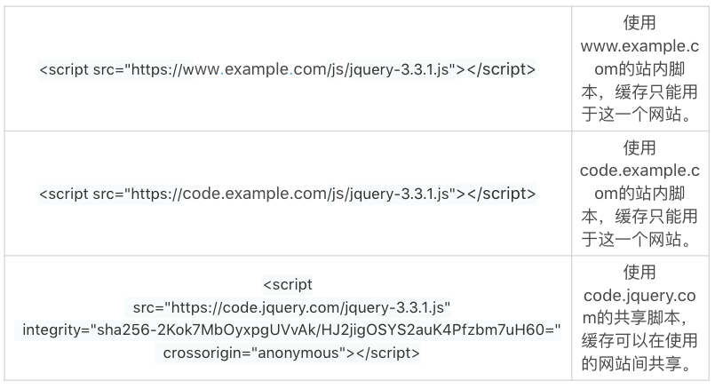

- 00 开篇词 你写的每一行代码，都是你的名片.md.html
- 01 从条件运算符说起，反思什么是好代码.md.html
- 02 把错误关在笼子里的五道关卡.md.html
- 03 优秀程序员的六个关键特质.md.html
- 04 代码规范的价值：复盘苹果公司的GoToFail漏洞.md.html
- 05 经验总结：如何给你的代码起好名字？.md.html
- 06 代码整理的关键逻辑和最佳案例.md.html
- 07 写好注释，真的是小菜一碟吗？.md.html
- 08 写好声明的“八项纪律”.md.html
- 09 怎么用好Java注解？.md.html
- 10 异常处理都有哪些陷阱？.md.html
- 11 组织好代码段，让人对它“一见钟情”.md.html
- 12丨组织好代码文件，要有“用户思维”.md.html
- 13 接口规范，是协作的合约.md.html
- 14 怎么写好用户指南？.md.html
- 15 编写规范代码的检查清单.md.html
- 16丨代码“规范”篇用户答疑.md.html
- 17 为什么需要经济的代码？.md.html
- 18丨思考框架：什么样的代码才是高效的代码？.md.html
- 19 怎么避免过度设计？.md.html
- 20 简单和直观，是永恒的解决方案.md.html
- 21 怎么设计一个简单又直观的接口？.md.html
- 22丨高效率，从超越线程同步开始！.md.html
- 23 怎么减少内存使用，减轻内存管理负担？.md.html
- 24 黑白灰，理解延迟分配的两面性.md.html
- 25 使用有序的代码，调动异步的事件.md.html
- 26 有哪些招惹麻烦的性能陷阱？.md.html
- 27 怎么编写可持续发展的代码？.md.html
- 28 怎么尽量“不写”代码？.md.html
- 29 编写经济代码的检查清单.md.html
- 30丨“代码经济篇”答疑汇总.md.html
- 31 为什么安全的代码这么重要？.md.html
- 32 如何评估代码的安全缺陷？.md.html
- 33 整数的运算有哪些安全威胁？.md.html
- 34 数组和集合，可变量的安全陷阱.md.html
- 35 怎么处理敏感信息？.md.html
- 36 继承有什么安全缺陷？.md.html
- 37 边界，信任的分水岭.md.html
- 38 对象序列化的危害有多大？.md.html
- 39 怎么控制好代码的权力？.md.html
- 40 规范，代码长治久安的基础.md.html
- 41 预案，代码的主动风险管理.md.html
- 42 纵深，代码安全的深度防御.md.html
- 43 编写安全代码的最佳实践清单.md.html
- 44 “代码安全篇”答疑汇总.md.html
- Q&A加餐丨关于代码质量，你关心的那些事儿.md.html
- 结束语 如何成为一个编程好手？.md.html
- 捐赠
27 怎么编写可持续发展的代码？
成功的大公司，也是从小公司起步的。刚开始的时候，软件可能比较简单，用户也比较少，一台廉价的服务器，或者一个简单的虚拟机，甚至几个静态的页面就绰绰有余。
很快，辛苦的努力得到回报，产品传播速度远超预期，用户很喜欢公司的产品或者服务，数量大幅增加，需求越来越强劲。这时候也是公司最忙碌的时候，每个人眼里只有两个字：“增长”。用户规模增长随之带来的是软件规模增长，运维复杂度增长。这时候，廉价的服务器满足不了需求了，就需要更多的服务器，甚至是各种用途不一样的服务器，还需要使用更多的带宽、更多的内存、更多的CPU，甚至更多的硬盘。
跟得上增长的公司，用户会越来越喜欢，就会脱颖而出，每一份辛苦都得到了优厚的回报；跟不上增长的，用户会越来越抱怨，公司会被迅速模仿，然后用户被抢走，公司被迅速甩开，每一份辛苦都成了一声叹息。
增长对软件的要求，就是要有处理越来越多工作和越来越大规模的能力或者潜力。这种能力，通常称之为可伸缩性（Scalability）。
不过，要提醒的是，也有人使用“可扩展性”这个词表示规模的扩张能力。可扩展性这个词汇很多时候也用于表示功能的扩展（Extensibility）。这就容易混淆规模扩展和功能扩展这两个完全不一样的概念。如果有人使用了可扩展性这个概念，要弄清楚指的是规模还是功能。
为了方便理解，减少混淆，我们使用更通俗一点的词汇来表达这两个概念。这两个词汇就是规模扩张能力（Scalability）和功能扩展能力（Extensibility）。
规模扩张能力，是依赖于具体的代码的。不是所有的代码都能适应规模的扩张。这一次，我们就来讨论代码的规模扩张能力，以及一些常见的陷阱。
两种规模扩张方式
规模扩张主要有两种方式。一种方式是规模垂直扩张（scale in/out），另一种是规模水平扩张（scale up/down）。
规模垂直扩张，指的是提高同一个处理单元处理更多负载的能力。比如，硬件上，增加服务器的硬盘、内存和CPU；软件上，优化算法、程序和硬件的使用等。
规模垂直扩张是传统的提高负载的方式，方式方法都比较直观，效果也立竿见影。但是，规模垂直扩张成本很高，而且是非线性的。比如说，4倍的CPU可能只提高2倍的负载，而8倍的CPU可能只提高2.5倍的负载。
另外，规模垂直扩张是有上限的，一台服务器的处理能力不是可以无限扩展的。还有，硬件的规模扩张，可能要更换机器，停止软件运行。这种规模扩张方式，不太适用于可用性要求高的产品。比如我们常用的微信，出现5分钟的停机都是天大的事故。
规模水平扩张，指的是通过增加更多的处理单元，来处理更多的负载。我们常见的例子，就是增加服务器。分布式系统、负载均衡、集群系统这些技术，提供的就是规模水平扩张的能力。
优秀的规模水平扩张技术，可以使用很多廉价的机器，提供大规模的计算能力。一般情况下，规模水平扩张的成本要低于规模垂直扩张。而且，如果其中一个节点出了问题，只要其他节点还在正常工作，整个系统也可以照常运转。如果想要添加一个新节点，系统也不需要停顿。规模水平扩张技术的这些特点，非常适用于高可用性系统。
和规模垂直扩张相比，规模水平扩张的方式方法并不直观。支持规模水平扩张的代码要能够协调地运行在不同的机器上，也就是说要支持分布式计算。很多代码，不是天生就支持分布式计算的，而且修改起来也不容易。
我们常说的优化代码，一般指的是提高每一个处理单元的使用效率，也就是规模垂直扩张能力。其实，我们还要考虑代码是不是能够分布式运行，也就是规模水平扩张能力。
麻烦的状态数据
影响代码水平规模扩张的最重要的一个因素，就是用户的状态数据。比如，用户的登录状态，用户购物车里的商品信息，HTTP连接里缓存的会话数据等。
如果用户访问一个服务节点时，在节点留下了状态。这个状态就要在多个节点间同步。否则，如果用户下一次访问被分配到不同的服务节点，这个状态就会消失不见。比方说吧，上午，我们在一个网站购物，把待选的商品放到购物车里。这个选择商品的过程，可能是由位于北京南城的数据中心的一台服务器处理的。下午，我们准备结账，重新访问这个购物网站。这时候，服务器可能是由位于贵州的数据中心提供的。如果上午访问和下午访问的服务器之间没有同步购物车数据，下午访问时，购物车里就没有我们想要的信息了。
购物车的状态同步，可以通过分布式数据库来解决。分布式数据库自动处理多个节点之间的数据同步。
现在的软件服务，大都是基于HTTP协议提供的Web服务。Web服务本身就是一个无状态的协议。即使可以保持HTTP的连接，一般的服务框架也会考虑在连接不能保持情况下的会话管理，也就是保存用户状态。HTTP协议层面的状态管理，也需要支持分布式计算。搭建支持规模水平扩张的Web服务时，要做好Web服务框架的选型。
如果我们的代码里，保存了状态数据，可能会影响规模水平扩张的能力。比如说下面的这个例子中的sessionCache这个静态变量，如果用来保存用户的会话，并且使用SessionId匹配用户行为，规模水平扩张时就会遇到麻烦。因为，这个变量内容的更改，只存在于运行它的节点里，不能在一个分布式系统的每个节点之间同步。
private static final HashMap<SessionId, byte[]> sessionCache = new HashMap();
对于规模水平扩张的需求，状态数据是一个很麻烦的存在。甚至，一些基础的，需要保存状态数据的网络协议，在早期的版本中也没有考虑规模水平扩张的问题。这就给规模水平扩张带来了一定的困难。
所以，采用规模水平扩张时，一定要小心代码的状态数据能不能同步。另外，由于软件依赖的基础设施问题，还要测试软件的运行平台是否能够很好地支持规模水平扩张。
无状态数据
如果一个服务是无状态的，规模水平扩张就会非常顺利。比如说，静态的网页，静态的图片，静态的商品描述，静态的JavaScript和CSS文件等等。由于不需要在服务端保留状态，这些数据资源就不需要在不同的节点间实时同步。无状态的数据，可以降低规模水平扩张的技术复杂性，在技术上有了更多的改进空间。
比如说，现代的浏览器，都可以缓存静态数据，比如说静态的JavaScript和CSS文件。如果用户访问的两个不同网站，使用了相同的脚本文件。浏览器只需要下载一次脚本文件，就可以在两个网站使用。这样，缓存的脚本文件就可以加速网页的加载，减轻服务器的压力。

分离无状态数据
由于无状态数据有这么多的优点，把无状态数据分离出来，单独提供服务就成了一个常用的解决方案。独立的无状态数据服务，既没有规模水平扩张的羁绊，还能充分利用客户端的缓存。另外，无状态数据和状态数据的分离，可以让状态数据的处理集中资源，也能提高状态数据的处理能力。
比如说，一个网站如果使用了共享的jquery.js脚本，下载这个脚本，就不再占用这个网站的资源了。
所以，如果你要设计一个具有规模扩张能力的软件架构，分离无状态数据和状态数据，既可以提高规模水平能力，也可以提高规模垂直扩张能力。
使用用户资源
对静态数据进行缓存，是现代浏览器提高服务性能的一个重要办法。除此之外，浏览器还可以缓存动态数据，比如HTTP的cookie以及HTTPS的安全连接的参数。
鉴于无状态数据的诸多优点，一些协议设计开始考虑无状态的服务场景。比如，TLS 1.3就加入了对无状态服务的支持。
无状态服务，并不一定都没有服务状态。一个典型的做法是，服务端通过一定的数据保护机制，把服务状态保护起来，发送到客户端。然后，客户端缓存封印的服务状态。下次连接时，客户端把封印的服务状态原封不动地送回到服务端。然后，服务端解封客户端发送的封印服务状态，就获得了需要处理的状态数据。这样，既有了无状态服务的便利，解除了规模水平扩张的限制，又解决了服务需要状态的客观需求。
遗憾的是，这种设计能够提供的服务状态数据尺寸比较有限，应用场景也比较苛刻，而且数据保护机制一般也比较复杂。所以，我们一般要在基础架构层面解决掉核心的问题（数据保护机制、服务状态封存机制、缓存机制等）。然后，在应用层面仅仅定制状态的内容，比如HTTP的cookie的格式和数据，就是可以定制的内容。而HTTP的cookie交换的机制，就由HTTP协议负责解决。
小结
如果把我们上面讨论的放到一起，就可以得到具有规模扩张能力的软件的一些最佳实践：
把无状态数据分离出来，单独提供无状态服务；
把最基本的服务状态封装起来，利用客户端的缓存，实现无状态服务；
小心使用服务状态，编码时要考虑服务状态的规模水平扩张能力。
基于上述的原则，市场上有很多优秀的解决方案和成熟技术。欢迎你在留言区分享、讨论这些解决方案和技术。
一起来动手
这一次的练手题，我们要拆解一下Web页面。找一个你常用的Web服务，比如说InfoQ或者极客时间。使用浏览器的插件，阅读这个HTML页面，试着分析下，这个页面里哪些可能是动态数据，哪些可能是静态数据？这个页面是怎么处理这些数据的？使用我们今天讨论的基本原则，这个页面还有没有优化的空间？如果你侧重于服务端的编码，你想想服务器端该做什么样的调整？
欢迎你在留言区留言，分享你的看法。也欢迎点击“请朋友读”，把这篇文章分享给你的朋友或者同事，一起交流一下。
© 2019 - 2023 Liangliang Lee. Powered by gin and hexo-theme-book.